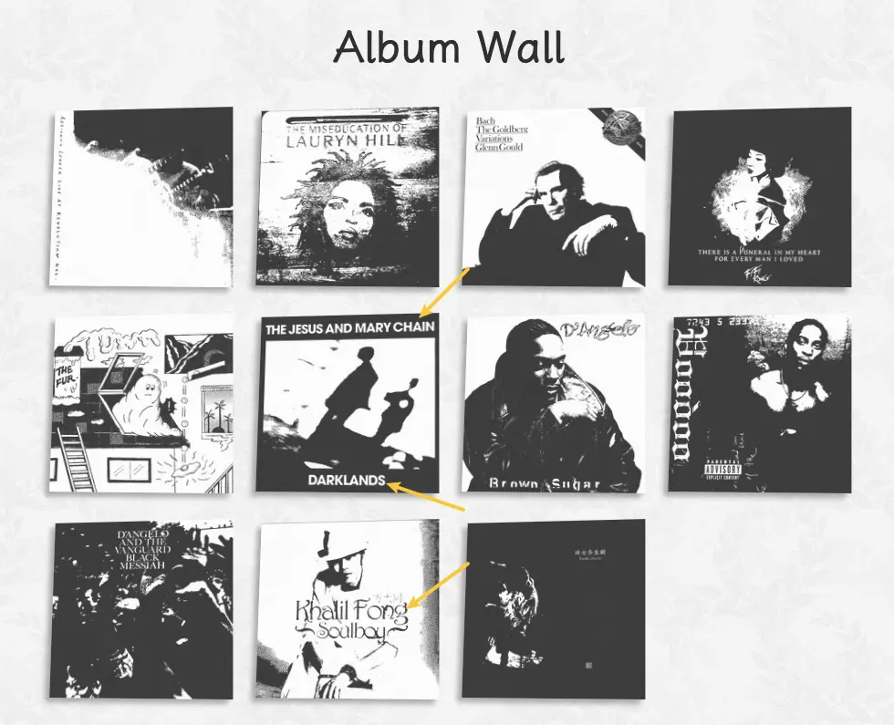

博客静态资源缓存问题
TL;DR
博客的图片由于设置了 cache-control public,max-age=31536000,immutable ，导致一直使用缓存的图片，而不会更新。
我的解决办法是给图片资源添加 ?timestamp=xxxx 的后缀，让浏览器识别到是一个新的资源，从而触发更新。
前些天在折腾 ImageMagick，看看能不能把 Album Wall 的图片再优化一下。尝试了很多参数，可能还是对参数理解不够，也没能折腾出什么有趣的风格，不过也做了一点点小的优化，例如现在专辑上的一些字可以显示出来了。
目前用来转换图片的命令：
magick input.avif \
-colors 6 \
-monochrome \
-define avif:lossless=true \
-alpha set -channel A -evaluate set 75% \
output.avif
更新图片并部署后，在电脑上看图片已经更新了，但在手机上看，无论刷新多少次，还是原来的。
{kind=link}

{kind=link}
因为我更新了图片，但没有修改文件名，应该是手机上的图片被缓存了，没有拉取更新后的图片。
我记得以前特意给图片和字体设置了缓存配置，检查了一下 netlify.toml，看到了图片的缓存配置：
[[headers]]
for = "/images/*"
[headers.values]
Cache-Control = "public, max-age=86400, immutable"
这个配置的意思是，对于所有路径匹配 /images/* 的资源，设置 31536000 秒（即一年）的缓存时间，并且当页面重新加载的时候，不验证资源是否变化，认为在一年内是永不改变的（immutable）。
当浏览器去加载图片的时候，发现已经缓存过了，而且自上次缓存到现在还没过去一年，于是直接就用缓存了，也不会去重新请求资源，图片就一直保持着第一次缓存时的样子。
对于一些很长时间不会变化的静态资源，例如字体，这么设置是很有好处的，浏览器只要发现缓存的资源没有过期，就会直接使用缓存。 immutable 避免了发送验证请求，在网络比较差的情况下，验证请求的响应可能也需要不少时间，而避免发送验证请求，就可以让缓存资源马上被使用。
对于一些频繁更改的静态资源是不合适的，如果资源的 URL 不变，浏览器就会一直使用缓存，而不去拉取最新的内容，这就会导致用户看不到更新后的内容。
有几种解决办法：
- 让用户强制刷新页面（清除页面缓存），但是很多用户可能都不知道如何强制刷新页面，而且我控制不了。
- 让用户在浏览器设置中清空缓存，但这会导致同时清除了其他网站的缓存，我也控制不了。
- 对于频繁变化的资源，设置很短的缓存时间，并总是要求验证资源是否过期。这个方法对于新的请求有效，但对已经被缓存的资源无效（因为设置了很长的缓存时间和 immutable）。
更改资源的 URL，例如原来是 bundle.js，可以通过改成：
# version in filename bundle.v123.js # version in query bundle.js?v=123 # hash in filename bundle.YsAIAAAA-QG4G6kCMAMBAAAAAAAoK.js # hash in query bundle.js?v=YsAIAAAA-QG4G6kCMAMBAAAAAAAoK
通过 URL 变化，告诉浏览器拉取新的资源。
针对我现在的问题，首先我会修改 URL，在 URL 最后添加 ?timestamp=xxxx ，从而让读者能马上看到更新；然后我也会将 max-age 改成一个更短的时间，一年实在是太长了。
使用 ?timestamp=xxxx 是因为时间戳一般来说都会不一样，每次获取一个新的时间戳就好，获取时间戳也相对简单。
我的博客托管在 Netlify，就算我不设置缓存，它默认也是有缓存机制的。默认是 cache-control public,max-age=0,must-revalidate ，即资源会立即过期，并且每次都需要重新验证资源。每次请求资源都会返回 Etag，每次刷新页面，都会重新请求资源，如果资源的 Etag 没有变化，Netlify 会返回 304 Not Modified 告诉浏览器资源未变化，浏览器就会使用这个资源的缓存；如果 Etag 变化了，就会返回更新后的资源。这样，如果资源没有更新，就会一直使用缓存；如果资源更新了，就会使用最新的。唯一的缺点就是每次都需要发送请求判断资源是否过期，而请求就可能受到网络影响，有可能需要等待一阵子。
如果是一些确定极少变化的静态资源，可以考虑设置 cache-control public,max-age=31536000,immutable ，可以很大程度改善这些资源的加载速度。例如我看到有的网站，每次访问或者切换页面，字体都需要等一阵子然后切换，或许就是因为字体文件没有被缓存，总是需要重新加载，设置缓存就能改善读者的访问体验。
除了改善用户的体验，缓存也减少了发给服务器的请求，减少了服务器的压力；因为不需要重复传输缓存过的资源，也减少了带宽的使用。
如果是一些偶尔会改变的静态资源，可以设置一个较短的 max-age ，或者依赖服务器默认的缓存配置。
就算什么都不做，浏览器本身也有 默认的缓存机制，不确定怎么弄，依赖浏览器默认行为就好。
如果你想了解 HTTP Cache，MDN 的 HTTP caching 是份不错的文档。